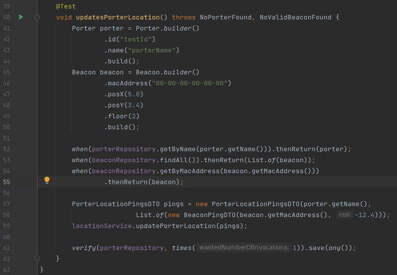
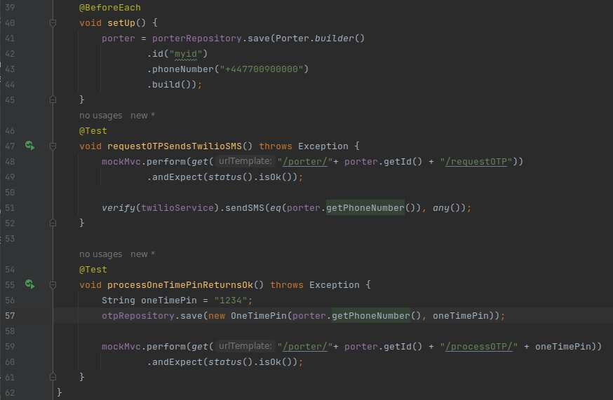

Testing
Comprehensively testing the functionality of our solution.
Testing Strategy
Testing is a crucial part of the software development process that ensures the quality and reliability of an application. In our project, we used a combination of unit, integration, and user acceptance testing to ensure that our application met the requirements and delivered a seamless user experience.
Unit Testing
Unit testing is an essential part of our software development process. We utilize unit testing to ensure that individual units of our code, such as methods and functions, function as expected and meet the requirements.
Web Application
We used JUnit as our primary unit testing tool for our backend services, and Jest for our frontend components.
JUnit is a popular Java testing framework that is widely used for unit testing. It provides a simple and efficient way to test individual units of code, such as methods and functions, in isolation from the rest of the application. We used JUnit to test the individual components of our backend service, such as controllers, services, and repositories, to ensure they functioned correctly and met the requirements. Here's an example test covering our core functionality:
In addition to backend testing, we also performed frontend testing using Jest. Jest is a popular testing framework for React applications that provides a simple and efficient way to test individual components in isolation. We used Jest to test individual components' functionality, such as rendering and event handling, and ensure they functioned as expected.
Mobile Application
 To unit test our Android application, we also leveraged the
JUnit framework. By executing our app's functions
on the Java Virtual Machine, we were able to validate the functionality of our Kotlin methods and ensure that
they were reliable and resilient. We followed a test-driven development approach to establish a solid
foundation for our mobile application. This enabled us to proactively address potential issues and errors early
in the development cycle, resulting in improved code quality and enhanced software performance.
To unit test our Android application, we also leveraged the
JUnit framework. By executing our app's functions
on the Java Virtual Machine, we were able to validate the functionality of our Kotlin methods and ensure that
they were reliable and resilient. We followed a test-driven development approach to establish a solid
foundation for our mobile application. This enabled us to proactively address potential issues and errors early
in the development cycle, resulting in improved code quality and enhanced software performance.
As part of our unit testing strategy, we also focused on ensuring that the BLE beacons were properly detected and
formatted by our application. This was a crucial foundational block of the entire system, as it enabled our app
to accurately identify and track porters within a hospital environment. We implemented
unit tests to validate the accuracy and consistency of our beacon detection and formatting functionality,
verifying that the correct data was being captured and transmitted to the appropriate system components. By
leveraging the power of unit testing, we were able to identify and resolve any issues with our beacon detection
and formatting logic before they could impact the overall system performance.
Another key feature that we extensively unit tested was the login process for hospital staff. Given the sensitive nature
of the data being accessed, it was critical that the login functionality was both quick and secure. We used unit
tests to validate features like the result of a login action being correctly calculated.
Device Compatibility / Cross Device Testing
Device compatibility testing is a crucial and indispensable aspect of mobile app development. This testing involves analyzing an app's seamless operation across diverse hardware and software configurations, which was particularly important in our specific circumstances:
- Firstly, due to the wide range of Android devices used in different UK hospitals, we had to ensure that our app was compatible with a variety of devices.
- Secondly, we had to account for emergency scenarios where backup devices may be used, such as scenarios where porters' devices run out of battery or malfunction. In such scenarios, the app must operate flawlessly on the backup devices, which required us to undergo comprehensive device compatibility testing.
We implemented device compatibility testing to ensure that the user experience of our application was consistent across a range of devices. This involved designing a scalable layout and optimizing it for different screen sizes and resolutions, ensuring that our app could perform optimally on any device. Such testing proved to be essential in identifying bugs where certain buttons on some screens were centered and clickable, whereas on smaller devices, these buttons were hidden due to layout offsets in our XML fragment files. This discovery prompted us to develop with screen scalability in mind, and in the end, we were able to achieve a consistent look and behavior on all devices:

Left: Testing app layout on devices with different screen resolutions.
Right: Testing
application functionality on Android emulator.
android.app.RemoteServiceException: Bad notification for startForeground
at android.app.ActivityThread$H.handleMessage(ActivityThread.java:1973)
at android.os.Handler.dispatchMessage(Handler.java:107)
at android.os.Looper.loop(Looper.java:224)
at android.app.ActivityThread.main(ActivityThread.java:7562)
at java.lang.reflect.Method.invoke(Native Method)
at com.android.internal.os.RuntimeInit$MethodAndArgsCaller.run(RuntimeInit.java:539)
at com.android.internal.os.ZygoteInit.main(ZygoteInit.java:950)The above error did not appear on our physical Samsung device which, at the time, was running Android 13.0. However, we got the error above on our physical Xiaomi device running a slightly lower version of Android. Further investigation revealed that the two devices had different code specifications for how notifications should be triggered. As a result, we made adjustments to the declarations of Notification Channels in our code to ensure compatibility with both devices, allowing us to produce notifications on both devices without encountering any errors.
As part of our commitment to delivering a high-quality product to our client, we ensured that all device compatibility tests were thoroughly documented:
| Samsung | Xiaomi | Emulator | ||
|---|---|---|---|---|
| HTTP POST working | ✓ | ✓ | ✓ | ✓ |
| HTTP GET working | ✓ | ✓ | ✓ | ✓ |
| Triggers Foreground Service | ✓ | ✓ | ✓ | ✓ |
| Generates Firebase Token | ✓ | ✓ | ✓ | N/A |
| Sends SMS | ✓ | ✓ | ✓ | N/A |
| Receives Firebase Message | ✓ | ✓ | ✓ | N/A |
| Scans for BLE beacons | ✓ | ✓ | ✓ | N/A |
| Triggers Notification | ✓ | ✓ | ✓ | ✓ |
| Runs app in background (Screen on) | ✓ | ✓ | ✓ | ✓ |
| Runs app in background (Screen off) | ✗ | ✓ | ✓ | N/A |
Integration Testing
Integration testing is another critical component of our software development process. We use integration testing to verify that different components of our application, such as the backend and frontend, work together correctly and meet the requirements. We use MockMVC and React Testing Library as our primary integration testing tools.
MockMVC is a powerful testing framework that is used to test the integration of controllers with the rest of the application. We utilized MockMVC to simulate requests to our application's API endpoints and verify the response from the backend. This helped us to test the integration of our backend components.
React Testing Library, on the other hand, allowed us to test the integration of our frontend components with the rest of the application. We used it to simulate user interactions and verify the response from the backend service. This helped us to ensure that our application's frontend components functioned correctly and provided a seamless user experience.
We conduct integration testing by creating test cases that simulate the flow of data and interactions between different components of our application. We then run these test cases using our testing tool to verify that the actual output and behavior of our application match the expected output and behavior. Here are some of the test cases that we created for our application:
Manual Testing
In addition to our automated testing procedures, manual testing was a vital aspect of our mobile app development process. Manual testing
allowed us to thoroughly evaluate the functionality of our application and ensure that it met all the required specifications. We
conducted these tests to verify the app's user interface, functionality, and usability, guaranteeing that the user experience was
intuitive and straightforward.
We conducted manual testing to simulate potential hospital scenarios where porters would repeatedly close and launch their application,
switch between apps, and log in and out of the system multiple times. These tests were crucial because they provided us with valuable
insights into how our application would operate in real-world hospital scenarios, allowing us to identify and address any potential issues.
During our manual testing, we discovered a significant battery-draining design flaw that had gone unnoticed. As mentioned in our previous
article outlining our mobile app implementation, we had launched a foreground service from our app that enabled the device to scan for BLE
beacons in the background and transmit them to the backend every 5 seconds. However, when we conducted manual testing by repeatedly closing
and launching the app, we observed that the beacons were being transmitted more frequently than every 5 seconds. Upon investigation, we
discovered that every time the user launched the app and clicked on 'Available' to start scanning, a new secondary service was created
if they had not pressed 'Unavailable' before closing the app, which stops the foreground service.
To address this issue, we implemented a factory design model for our foreground service. The factory model ensured that at any given time,
there would be a maximum of one foreground service running per device. This approach enabled us to prevent multiple foreground services from
launching simultaneously and ensure that the app would transmit beacon data to the backend every 5 seconds, providing optimal performance and
battery life.
User Acceptance Testing
"Absolutely fit for purpose. It's simple and straightforward. This is exactly what it needs to be."During the testing phase, we invited porters from the hospital to use our application and provide us valuable first-hand feedback. This feedback was crucial in identifying any usability issues and making necessary improvements to the application. We observed the porters as they used the application, noting any issues they encountered or features they found confusing.
We also conducted feedback sessions with the porters to gather their thoughts on the application's functionality, usability, and overall experience. This feedback allowed us to make necessary changes to the application and ensure that it met the porters' needs and requirements.
Involving the porters in the testing process was a valuable step in ensuring that our application provided a high-quality user experience and met the needs of its users. Their feedback allowed us to identify and address any issues before the application was deployed, ensuring that it was fully functional and user-friendly.
Conclusion
In conclusion, testing is an essential part of the software development process, and it ensures the quality and reliability of an application. We used a combination of testing tools and methodologies, including JUnit, MockMVC, Jest, React Testing Library, manual testing, and user testing, to ensure that our application met the requirements and delivered a seamless user experience. Ultimately, we strived to deliver a bug-free and optimized web and mobile app that could operate seamlessly on a range of devices, ensuring a positive user experience for our client, and by testing our applications thoroughly, we were able to identify and fix issues early in the development process to ensure that our solution was up to standards.